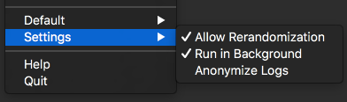

Settings
Let’s look at how you can configure LinkLiar.

🕹 Allow Rerandomization
If an interface has been set to “Random”, it may still not be random enough for you. Because keeping a specific address for a year or so, is not really random.
With this setting enabled, LinkLiar will shuffle the MAC address whenever you logout or put your computer to sleep (e.g. closing the lid).
This way you ensure enough entropy even over a longer period of time.
👣 Run in Background
If you quit LinkLiar, it does not really quit. It is alive at all times and manages your MAC addresses according to your will. This way you can make sure that the MAC addresses even keep random on boot, before you login.
You may disable this setting, so LinkLiar is only active while you can see the LinkLiar icon in your status bar.
😎 Anonymize Logs
Should you ever find yourself in need to share your log file or a screenshot of LinkLiar, you might first want to turn on this setting.
It will deterministically change the way it logs and displays the MAC address so you do not expose your original hardware MAC address.
Don’t get confused though if this is turned on. Everything still works normally, but LinkLiar will tell you one thing while reality is another.
By the way, you can see the logs by typing the following command into your Terminal.
/Applications/LinkLiar.app/Contents/Resources/logs
Assuming that your LinkLiar.app is located in /Applications.